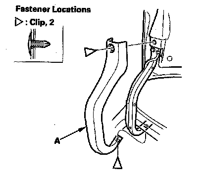
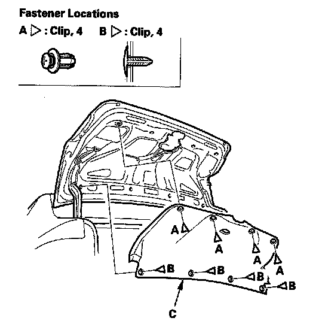

Trim Removal/Installation - Trunk Lid
Trim Removal/Installation - Trunk LidSpecial Tools Required
KTC trim tool set SOJATP2014 *
* Available through the American Honda Tool and Equipment Program
4-door
NOTE:
- Put on gloves to protect your hands.
- Take care not to bend or scratch the trim and panels.
- Use the appropriate tool from the KTC trim tool set to avoid damage when prying components.

1. Remove the clips from both trunk lid hinge covers (A), then remove the covers.

2. Remove the clips (A, B), then remove the trunk lid trim (C).
3. Install the trim in the reverse order of removal, and check if the clips are damaged or stress-whitened, and if necessary, replace them with new ones.